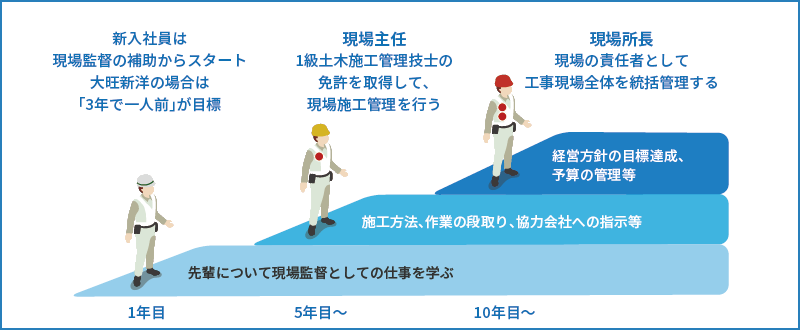

舗装部門の特徴
舗装部門では、道路などの舗装業務を行います。大きく分けて、プラントでのアスファルト製造業務、現場での舗装業務の２つがあります。
2015年新設の四万十合材センター。
1時間に60トンものアスファルトを生産できます。
モニターが並ぶオペレーター室。
コンピューター制御でプラントを運転・管理します。
ダンプにアスファルトを積載。
作りたてのアスファルトは非常に高温です。
出荷前にアスファルトの状態をチェック。冷めると固まるので、工事現場への移動時間を考えて温度管理します。
舗装工事は夜間工事となる場合も多いです。通行を規制しての工事は、綿密な時間が必要になります。
舗装はやり直しができない一発勝負。機械化も進んでも、一人一人の技術が出来上がりを左右します。
道路工事はどうしても騒音とか通行規制など住民の方にご迷惑がかかります。それだけに、道路が綺麗になったと喜んでもらえると嬉しいですね。
舗装工事の仕事
舗装には施工チームとアスファルト製造チームがあります。舗装の実作業は職人さんたちの仕事。大旺新洋は現場監督として工事がスムーズに進むように心を配ります。材料となるアスファルトも、プラントと呼ばれる施設で自社で製造しています。
舗装はやり直しがきかない一発勝負です。工程の細部にいたるまで、あらゆる可能性を考えて準備します。
練られた工程を実現する現場力は、大旺新洋の得意とするところ。スムーズな連携で完成に導きます。
プラントでは、石や砂、アスファルト、フィラーと呼ばれる石粉などを混ぜて、用途に合った舗装用アスファルトを製造します。
出来上がったアスファルトは、温かい状態で現場まで運ばれます。輸送の時間も考慮して温度調整を行います。
道路は生活基盤なので、住民の方との対話がとても大切です。説明会を行ったり、作業中もできるだけご迷惑のないように対策します。
舗装業務は完成形が見えやすいもの。綺麗になった道路を見て、地元の皆さんが喜んでくれることが励みです。
舗装の現場
舗装の現場は大きく分けて、アスファルトを作る現場（プラント）と、アスファルトで道路を舗装する現場があります。現場によっては昼間の工事ができない場合は、夜間工事を行う場合もあります。

舗装現場は、みるみるうちに仕上がっていくところが面白いところです。道路がきれいに完成したのを見ると達成感を感じますよ。
施工実績例